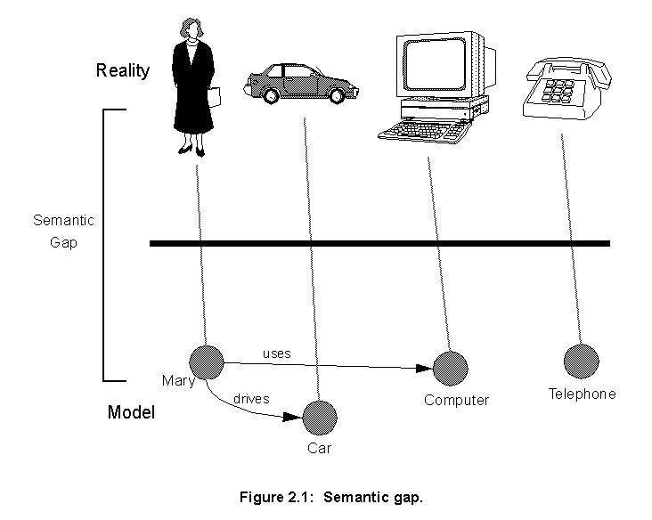
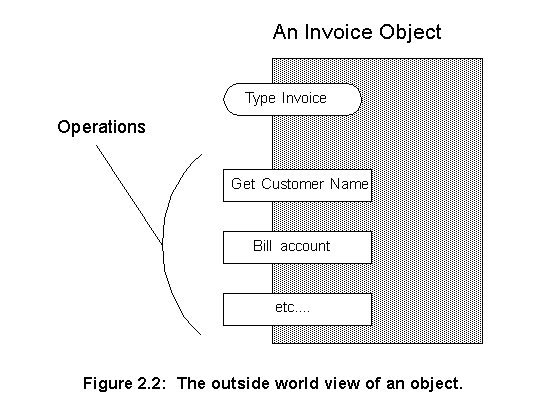
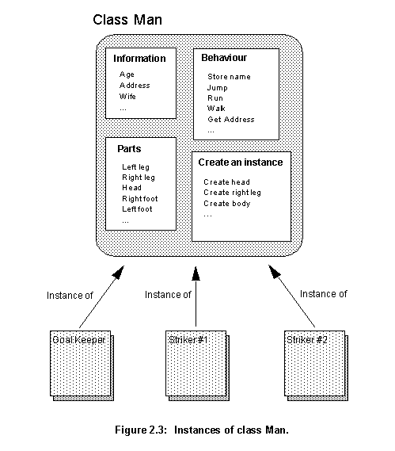
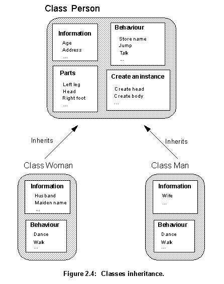
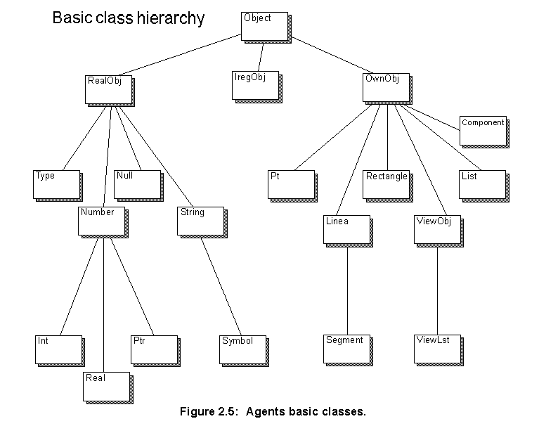

The world around us can be seen as objects, such as people, houses, cars which are in many ways related to each other. What the objects model depends on what one intends to represent. A model of our world can be represented equally well by loan, credit, stock and share objects, if one is interested in financial markets. The objects chosen will then be dependent on what the object model is intended to represent.
People tend to think about the world in terms of objects, and therefore it is simpler for them to do the same when representing a data model. Such a model, based on an object-oriented approach, is easier to understand because it is more closely related to reality. Such a design method will have a small semantic gap between the model and reality, as shown on figure 2.1. On the top of the figure are the real life objects, with many attributes, such as colour, size, functionality, and at the bottom the data structure that captures only the real life objects' characteristics and relationships relevant to a certain computational task. The semantic gap is the difference between how completely a model represents reality and reality itself. The closer the object oriented model is related with reality, the smaller the semantic gap.
 The smaller the gap, the easier the system is to understand and modify. Modifications will tend to be local, affecting one or few individual items, which are represented by code isolated in objects.
In an object oriented model, the components of the modelled system are represented by a number of objects. These objects usually correspond to real life entities, such as a share, an invoice, or a customer.
One can associate information (states) and operations (behaviours) to each object. For instance, an Invoice object can hold information such as the name of the company to be invoiced, the invoice value or tax deductions. It can have a set of operations to modify this information and to perform behaviours such as billing the customer account or warning that a bill is overdue. The only part of an object accessible from the outside should be its operations, its inside should be hidden from the outside world. Outside objects just use those operations, they can not see how they work (fig. 2.2). Only when one looks inside an object, can a person see how it implements its operations.

Amongst the information an object holds are any associations with other objects. For example, the Invoice object may hold a Person object to represent the customer. The model's objects have relations with each other. A family, for instance, can be represented as an object, called Family, that holds a grouping of objects called Man, Woman and Child, that have the relationship of belonging to the same family. The object Family represents this particular aggregate, but it is not the aggregate itself. An aggregate is a union of several objects, and such an union can often be represented by an object of its own. For instance, the object Football Team can be built to hold twelve objects of type Man, and to express the particular relationship these twelve men have to each other. This relationship can be expressed in various forms, such as the group behaviour of playing football.
The internal workings of any object are only available when someone looks into them. This includes their information structure, their constituent parts and how the behaviour for the operations is defined.
The dynamics in an object oriented model are created by means of stimuli to or from other objects. A stimulus is the event when an object communicates with another object. In a programming context, the word message is used. An object sends messages to other objects, and has operations triggered by messages sent from them. These operations can in turn cause new messages to be sent. For example, if the object Invoice is required to bill the customer it will receive a stimulus that will trigger this behaviour, if Invoice is written in a language that implements message passing (such as Smalltalk) this stimulus will be a message. Complicated behaviours will fire many stimuli between many objects. If we send the message play to the object Football Team it will send many messages to each object Man, which in turn will send many messages between themselves and to other objects outside Football Team.
All information in an object oriented system is stored inside objects and can only be modified when objects receive messages to do so. The behaviour and information are encapsulated in the objects. Objects support the concept of information hiding, they hide their internal structure from outsiders. To use an object one only needs to know which operations it offers. For example, if a object oriented graphics library is used by an object oriented application the routines in the library can be changed at will. The application program code will not be affected provided that the messages that the library accepts are still the same. Encapsulation insures that the application writers do not know anything about the library implementation and thus can not write implementation dependent code. Encapsulation means that all that can be seen of an object is its interface (the operations it can perform).
These concepts have their roots in abstract data types. They are structures with a number of operations that affect them. Both, objects and abstract data types, are abstractions and are defined in terms of what they do, not how they do it. One of the advantages is that one should be able to use them independently of their implementation. This means that even if the implementation is modified, it shouldn't be necessary to change the way the abstract data types are used. Another advantage is the reduction in complexity as the users have no possibility of becoming involved in the objects internal affairs but should only have the ability to use them according to their specifications.
Football Team, one can see that its objects (the eleven players) share similar behaviours and structure. All can jump, talk, kick, etc. These objects have the same mould or template. Such a group represents a class. In Jacobson [20] a class is a definition, a template or a mould to enable the creation of new objects and is, therefore, a description of the common characteristics of several objects. Using the concept of class, characteristics can be associated with a whole group of objects. A class can then be described as an abstraction that describes all the common characteristics of the objects forming part of it.
An object that belongs to a class is called an instance of that class. The players in the object Football Team are instances of the class Man (fig. 2.4). The information structure and behaviour of an object is defined by its class, but each instance has a unique identity. Different instances can receive different sequences of stimuli and, as a result, have different internal states.

All players are instances of the same class Man, and therefore will have the same behaviour. If one wishes to create a female football team and describe the fact that men and women have different behaviour, another class, Woman, has to be created. For this new class, behaviour and structure should be described, and a lot of this information will be just a repetition from the description of the class Man. Elements such as name or age are the same for the two classes.
Man and Woman are compared they will have a lot of common information. This common information can be shared by the classes by extracting them and putting them in another class. In this new class called Person, everything that is common to Man and Woman is described, in this way common characteristics can be shared by many classes. All the common characteristics are collected under one specific class and the original classes (in this case Man and Woman) inherit from it. As they inherit the common characteristics, Man and Woman only need to implement the characteristics unique to them, for example behaviours, such as dance and walk can be defined differently for each. The two classes contain the same things as before, but their description is simplified by inheritance from Person (fig. 2.4).

Using inheritance, common descriptions can be reused, promoting the concept of code reusability [22]. And as descendant classes only implement the extra information that differentiates them, inheritance cuts redundancy, leading to smaller, easier to understand systems. Another advantage is that, if it is necessary to change some characteristic in the class Person (e.g. how a person talks), it is sufficient to do the modification in one place. When the modification is implemented Man and Woman automatically inherit it. This helps create models that are easier to modify and evolve.
Woman. Teachers can be male or female and women can have many other professions apart from teaching. When describing a new class, if one needs characteristics from two other classes, it is possible to inherit from both of them. Multiple inheritance means that one class can have more than one direct ancestor. In the present example the new class FemaleTeacher would inherits all woman operations from the class Woman and the all the teacher's operations from the class Teacher. Only information concerning female teachers would have to be added.Multiple inheritance permits the combination of the functionality of different classes into one, but it has its problems. If each of the ancestor classes have a method with the same name, let's say a method called print. This method prints the class representation in the standard I/O. From which ancestor will the derived class inherit this method? It can not inherit from both. And if the ancestors have internal variables with the same name, how can the derived class name them? Unfortunately there isn't a standard way for dealing with this problem and each object oriented language offers a different solution.
The class Person performs the operation Get Person's Name (fig. 2.4), all classes derived from it inherit this operation. If an object wants to query about a person's name, it doesn't matter if the object receiving this query will be from the class Man, Woman or FemaleTeacher, all of them should implement the operation.
It is up to the receiver of a stimulus to determine how it should be interpreted, not the transmitter. The transmitter needs only to know that another instance can perform a certain behaviour, not which class it belongs to nor which operations will perform that behaviour. Only what should occur is specified, not how it should be implemented. In this way flexible and modification resistant systems can be implemented. If a new object from a new class is added, this modification should only affect this new object not those who send stimuli to it.
An object oriented language should support, at least, the following core concepts of object orientation:
Encapsulated objects
Class and instance concepts
Inheritance between classes
Polymorphism
There are many object oriented languages around, such as Smalltalk [27], Eiffel [29], CLOS [30] or Objective C [28]. Different languages have chosen different solutions for different problems, and they support object orientation concepts in different ways. This makes some languages more suited for some applications than others.C++ was the language of choice for this application for many reasons:
Invoice would look as follows:
By name: invoice.billAccount(); By address reference: invoicePtr->billAccount();
Invoice would look as follows:
class Invoice {
float value;
char* customerName;
public:
char* getCustomerName();
void billCustomer();
void printInvoice();
};
In this class two variables, value and customerName, and three functions, getCustomerName, billAccount and printInvoice, are declared. In this particular case, only the functions are accessible from outside the class instances, because they were declared public. Functions and variables can be defined as in C, just by adding a reference to the class, as in:
char* Instance::getCustomerName() { <function body> }
Instances can be declared or created by the operator new, in this case this operator returns a pointer to the instance:
Declared: Invoice invoice1; Created: Invoice* invoicePtr= new Invoice;
Invoice is needed, which is able to bill someone over the Internet using e-mail. It differs from Invoice just on the operations dealing with the network. A possible declaration would be:
class InvoiceEmail: public Invoice{
char* emailAddress;
public:
void setEmailAddress(char*);
void billCustomer();
};
This class declaration states that InvoiceEmail descends from Invoice. The new class inherits all functions and variables of Invoice. It adds the variable emailAddress to hold the customer e-mail address. It also adds as well a new function setEmailAddress to change the e-mail address, and overrides the Invoice's function billCustomer to allow the new way of billing. The C++ override feature allows the substitution of a function in the ascendent class for a new one defined in the new class.billCustomer in the class InvoiceEmail is to be used, a variable of type InvoiceEmail or a pointer of type InvoiceEmail* has to be used. But if the class Invoice is redefined as:
class Invoice {
float value;
char* customerName;
public:
char* getCustomerName();
virtual void billCustomer();
void printInvoice();
};
The function billCustomer becomes virtual. Now if a general pointer of type Invoice* is created and used to point to objects of classes Invoice and InvoiceEmail, when the function billCustomer is called, the compiler will use the correct version for each case:
Invoice* invoicePtr; invoicePtr= new Invoice; invoicePtr->billCustomer(); // Calls the function in Invoice; ... invoicePtr= new InvoiceEmail; invoicePtr->billCustomer(); // Calls it in InvoiceEmail;The programmer doesn't have to know which kind of object is pointed by
invoicePtr, he just needs to know that the function billCustomer will bill a customer, it is up to the receiving object to decide how to implement it.In any realistic software project, changes are all but inevitable. Also, the nature of the human creative process is inherently evolutionary. The usual human approach to a new programming task is to go through an interactive process of analysing the problem, implementing it, and then refining the design. Prototypes or working models of the program are created. Object oriented design techniques reflect the evolutionary aspect of software development. The steps of analysis, design, and implementation used in more traditional software development approaches, are still necessary, but the separation between them is blurred. And in each phase the design is more closely tied to real world objects found in the problem being solved.
The development of the hierarchy of classes used in this project followed this model, a prototype with a hierarchy of classes was created [18]. On this prototype many ideas were tried, some classes were moved up and down the class hierarchy. The position of a class in the hierarchy reflects how specialized the class is, the higher its position the more general a class is. Many classes where broken down, generally making a more general class, more useful to share behaviour, and a more specialized one, more useful to implement a specific task.
Through this interactive process, the basic hierarchy of classes shown on figure 2.5 and 2.6 was created. These figures show only the basic classes, shared by all programs (placement and routing included).
Other classes where created to support specific behaviours, and will be discussed in the following chapters, whenever needed. The following explanations about this class hierarchy are intended to give an overview of how the classes relate to each other and to show the basic foundations of the program. More specific topics about the program workings are not discussed.
Object, has the basic virtual functions shared by almost all other classes. Those functions allow a very high level of polymorphism, they allow basic functions to be performed by objects regardless of their types. The declaration of those public functions is:
class Object{
...
public:
virtual void operator=(const Object&);
virtual Object& copy() const;
virtual Type& type() const;
virtual Boolean relate(const Symbol&, const Object&) const;
virtual void print(ostream&) const;
};

The five basic operations all objects should perform are then:
operator= overloads the normal C++ operator = to perform the operation defined in the function. In this case, creating an equal operator that is performed by any object on any other object, regardless of type. Of course, if the two objects involved in the operation do not support it between themselves an error will be signalled.
Object. It is used for debugging purposes only.
RealObj hold the basic data structures: type, numbers, strings, numbers and Null (a class representing NULL).
OwnObj are set structures formed by other objects. For example: class Pt (point) is formed by two objects of class Int (integer), class Linea (line) is formed by two objects from Pt.
DesignCmp) other just a simple wire (Wire). When one of this list objects is deleted all memory allocated to hold its elements should be deallocated. As C++ does not have any automatic garbage collection facility, it is the programmer's responsibility to ensure that all the allocated memory is deallocated when its space is no longer necessary. Objects from classes derived from OwnObj can "own" the objects inside them. This means that they will do all the memory management, creating and destroying objects whenever necessary. If an object is "owned" by another, there are mechanisms for not allowing any other object to destroy it. This solution is more efficient than Lisp style garbage collection and it takes care of almost all memory management problems.RealObj derived classes:
Int for integers, Real for real numbers and Ptr for pointers, are derived from it.
Symbol is derived from it, Symbol is a special kind of string that can not be changed once created.
OwnObj derived classes are shown:
Lst that creates specialized lists for any kind of object, for example Lst<Int> for Int objects and Lst<Pt> for Pt objects.
ViewLst is a specialization of ViewObj to deal with lists.
Component and List classes, shown in figure 2.6. Note that the hierarchy of classes representing the design is based upon OOP requirements it does not necessarily resemble a design hierarchy. The hierarchy can be divided in three groups:
Component class describe the components found in the design: MOS and bipolar transistors, I/O pads and electric nodes. They hold information such as the I/O pads of each component and the component's layout description.Component objects to describe the components layout.
DesignCmp holds the designs. It is basically a list of objects derived from class Component and a rich set of functions to manipulate them.
Next
Contents
Talk to me